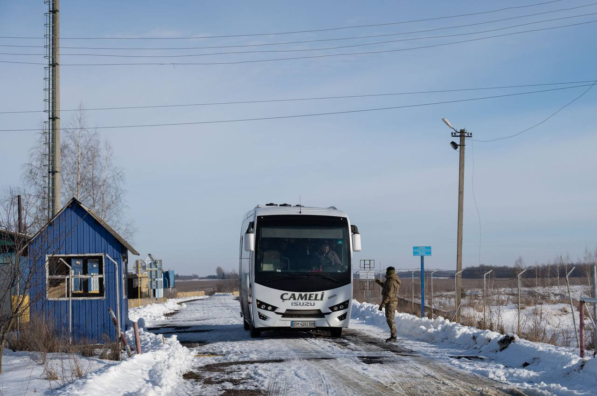

Імплант Neuralink вперше вживили в мозок людини.
Пацієнт почуває себе добре, повідомив Ілон Маск. Neuralink у вересні оголосила набір добровольців для
клінічних випробувань з імплантації імпланта в мозок, за допомогою яких в тому числі можна управляти
протезами. Маск заявляв, що компанія планує створювати і протези.
Мінус російський Су-34 у Луганській області, – Генштаб
Українські військові поповнили втрати ворожої авіації. Загалом росія уже втратила 332 літаки та 324 гелікоптери.
Сьогодні починаються найбільші навчання НАТО з часів холодної війни
У них візьмуть участь 90 тис. військовослужбовців усіх 31 країн НАТО, а також Швеції, близько 50 бойових
кораблів, 80 одиниць авіатехніки, 1,1 тис. наземних бойових машин, включно зі 133 танками.
Пентагон прокоментував надання Україні високоточних керованих бомб GLSDB — заявив речник Пентагону Патрик Райдер
“Ми визнали минулого року, ми надамо Україні GLSDB в межах нашої програми USIA –
наших зусиль з надання допомоги у сфері безпеки, що фінансується USAI.
Однак, з міркувань безпеки операції, ми не збираємося підтверджувати конкретні терміни”, – заявив Райдер.
За його словами, США віддають право Україні говорити про будь-які поставки озброєнь.
Німеччина оголосила про нового пакета допомоги Україні.
Німеччина оголосила про нового пакета допомоги Україні.
У ньому — десятки бронетранспортерів, танки для розмінування та снаряди для систем ППО
ак, до пакета допомоги Україні увійшли:
- 24 бронетранспортери;
- 4 гусеничні всюдиходи Bandvagn 206 (BV206);
- снаряди для систем ППО IRIS-T;
- 1 040 патронів калібру 155 мм;
- 3 танки для розмінування WISENT 1;
- 1 мостоукладальник BIBER із запчастинами;
- 14 спецпристроїв на танки для розмінування;
- 1 морська система для розмінування;
- 1 система відеоспостереження Satcom;
- 4 автомобілі для прикордонної служби;
- 450 ланцюгів протиковзання;
- 194 тисячі індивідуальних пайків харчування.
З полону повернули 207 чоловік

Наші – вдома. 207 хлопців.
Повертаємо попри все.
Пам’ятаємо про кожного й кожну в полоні.
Воїни та цивільні. Маємо повернути всіх.
Працюємо над цим.
Президент Зеленський.